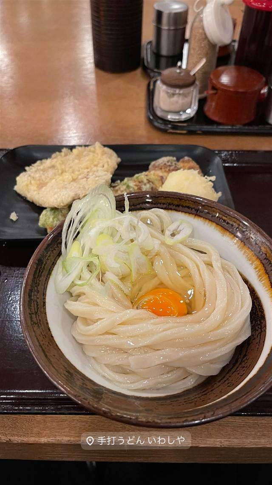
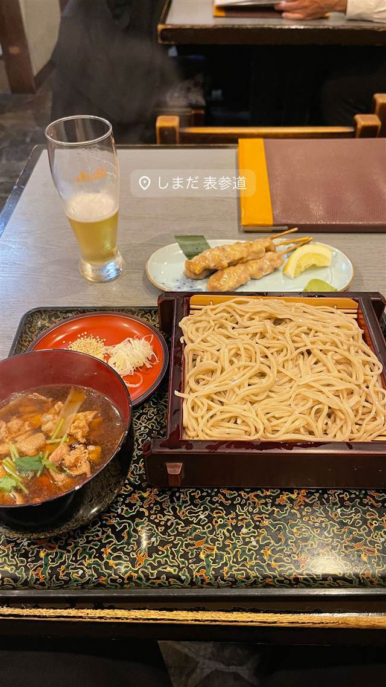

そば・うどん · うどん・ほうとう · 青山一丁目
手打うどん いわしや 青山店
讃岐仕込み、兵庫・西宮の本店から進出した2号店の釜玉うどん
手打うどん いわしや
讃岐で修行した店主が兵庫・西宮で開いた「いわしや」が、高い評価を経て2018年に東京・青山へ進出した2号店。ぶっかけうどんや釜玉うどんなど本場仕込みの手打ちうどんが楽しめる。
REVIEWS
世間の評判
3.65食べログ
コシある讃岐麺と手頃な価格
- コシの強い讃岐うどんとクリアな出汁の美味しさを評価する声が多い
- 青山という高級な立地にしては値段がとても良心的だという声が多い
- 駅直結で立地がよく回転も早いため待たずに入れるという声が多い
- 平日は19時までの営業と短くもっと遅くまで営業してほしいという声もある
食べログ 口コミ1384件
| 創業 | 2018年、西宮本店に次ぐ2号店として青山に出店 |
|---|---|
| 系譜 | 本店は兵庫県西宮（中国自動車道・西宮北IC南側）の「本格手打うどん いわしや」。讃岐で修行した店主が地元・西宮で開業し、高評価を経て東京・青山に進出した |
| 看板 | ぶっかけうどん、釜玉（冷玉）うどん |
| こだわり | 讃岐仕込みの手打ち麺 |
| どこから | 都心 |
| 営業時間 | 月〜金 11:00-19:00 土 11:00-14:00 日 休み |
| 予算 | 昼 ～¥999 夜 ～¥999 |
| 定休日 | 土曜・日曜・祝日 |
| 場所 | 青山一丁目 東京都港区北青山 青山ビルヂング地下1階 |
| メモ | 青山一丁目駅直結、青山ビルヂング地下1階、カウンター・テーブル計約40席 |
食べたもの：釜玉うどん
NEARBY
近い店・同じ系統の店
-
 うどん・ほうとう 東京駅
難波千日前 釜たけうどん 八重洲北口店
脱サラ店主が独学で生んだ、半熟卵天ぷらのちく玉天ぶっかけうどん
昼 ～¥999 夜 ～¥999
うどん・ほうとう 東京駅
難波千日前 釜たけうどん 八重洲北口店
脱サラ店主が独学で生んだ、半熟卵天ぷらのちく玉天ぶっかけうどん
昼 ～¥999 夜 ～¥999
-
 うどん・ほうとう 新宿駅(南口)
うどん 慎
一晩寝かせ強いコシを出す、注文後に打つ明太釜玉うどん
昼 ¥1,000～¥1,999 夜 ¥1,000～¥1,999
うどん・ほうとう 新宿駅(南口)
うどん 慎
一晩寝かせ強いコシを出す、注文後に打つ明太釜玉うどん
昼 ¥1,000～¥1,999 夜 ¥1,000～¥1,999
-
 うどん・ほうとう 恵比寿駅（西口）
うどん山長
1859年創業のかつお節専門店が手がける自家製だしのうどん
昼 ¥1,000～¥1,999 夜 ¥4,000～¥4,999
うどん・ほうとう 恵比寿駅（西口）
うどん山長
1859年創業のかつお節専門店が手がける自家製だしのうどん
昼 ¥1,000～¥1,999 夜 ¥4,000～¥4,999
-
 うどん・ほうとう 赤坂見附／赤坂
室町 砂場 赤坂店
室町砂場唯一ののれん分け店で天ざる天もりを考案した元祖
昼 ¥2,000～¥2,999 夜 ¥5,000～¥5,999
うどん・ほうとう 赤坂見附／赤坂
室町 砂場 赤坂店
室町砂場唯一ののれん分け店で天ざる天もりを考案した元祖
昼 ¥2,000～¥2,999 夜 ¥5,000～¥5,999
-
 うどん・ほうとう 目黒駅
手打ちうどん こんぴら茶屋
1983年創業、香川出身の店主が受け継ぐ牛かれーうどん
昼 ¥1,000～¥1,999 夜 ¥1,000～¥1,999
うどん・ほうとう 目黒駅
手打ちうどん こんぴら茶屋
1983年創業、香川出身の店主が受け継ぐ牛かれーうどん
昼 ¥1,000～¥1,999 夜 ¥1,000～¥1,999
-

うどん・ほうとう 表参道駅 手打 しまだ 食べログうどん百名店に選ばれた濃厚カレースープうどん 昼 ¥1,000～¥1,999 夜 ¥4,000～¥4,999